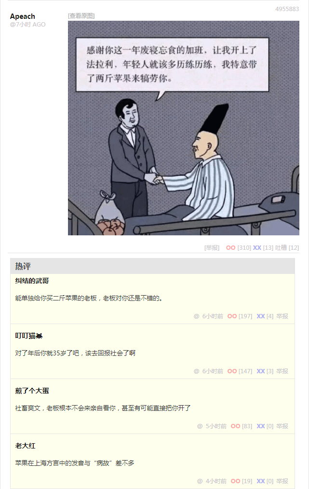

约瑟夫临终的时候，家人聚集在身边。
约瑟夫见到耶稣就问：“你是耶稣还是秀全？”
耶稣答道：“我是耶稣，马莉娅的儿子。”
约瑟夫又问秀全：“你就是秀全了？”
秀全答道：“阿爸 ，阿父 ，在祢凡事都能。我是秀全，您的儿子。”
约瑟夫对秀全说：“我称你为巴拉巴 并把芝麻山洞的开门密码告诉你，我的事业建立在那山洞中，外人的觊觎，不能胜过你。”
——《石达开福音》
“这种报纸，早就该封了，简直是阿尔萨斯之耻、说客之耻”，梁效把《苹果日报》终刊号扔在桌上，“从明天开始，阿尔萨斯每年会少三万张废纸。”
“你是方针、政策、路线、计划，还是完成啊？”
“阿爸 ，阿父 ，我是总结。”
“我生阿拉法，我生贝塔，我生伽玛，我生德尔塔，我生泽塔，我一直生到了俄梅戛”，耶稣说，“我是首先的，我是末后的。我是初，我是终。我必将加冕新时代王冠。”
——《冯云山福音》
“这种杂志，也该封了，简直是阿尔萨斯之耻，洛林之耻”，阿里巴拉巴 或曰阿里本阿巴 把《壹周刊（斯特拉斯堡）》终刊号扔在桌上，“连希腊字母表都背不全。”
“但是照样拿了香槟杯普利策奖”，梁效有不同意见，“只要钱给到位，总有大手名校的博士生导师写雄文辩护，说色目字母表背全了。①”
“也是，埃普西龙和伊普西龙都是混进来的野种”，阿里酸溜溜的说，“俩小样儿都惦记着反客为主篡党夺权，只不过一个成功了，一个失败了。”
“就连本尊也是不务正业”，梁效酸溜溜的说，“本来表示辅音，刚跳槽就表示元音了。”
“我们的嗓子眼比较灵活，你们舌头短”，阿里得意的说，“搞出尖团合流来还钦定为普通话标准语。”
“我们嘴里干干净净，笔下清清楚楚，你们嘴里胡说八道，笔下更是莫名其妙”，梁效得意的说，“一通狂草写完，对方问写的是啥，自己都给忘了。②”
“阿爸 ， 阿父 ”，杨秀清在十字架上哀嚎，“为什么抛弃我 ？”。
“嗤”，韦昌辉一矛戳去，“拉过四李迭地？”
——《萧朝贵福音》
“这帮说客之耻开始撒传单了”，阿里从门缝里抽出一张小广告，递给梁效。
“哦？人民群众看得懂么？”梁效接过来一看，上面大批鬼画符，“咱们看着都费劲。”
“就是给咱们看的”，阿里接口，“专挑出版社、新闻社、杂志社、码字工作室之类充沛着大批‘文化人’的地点派送。”
“学校里呢？”梁效比较关心这个问题。
“门口有保安”，阿里摊手，“送外卖的进不去。”
“难怪有呼吁，公立机构应该拆除围墙，与周边社区居民融为一体”，梁效想起时事新闻，“说客就那么一说，有关部门就那么一听，没人当回事。”
“外面的人想进去，里面的人想出来”，阿里评价，“学校附近的酒馆格局与别处不同，就为了伺候大批穿校服而站着喝酒的文曲星。”
“不一定”，梁效有不同意见，“现在生活节奏越来越快，繁华地段的房租也越来越贵，‘立呑処’也越来越多了，不比‘居酒屋’少，只许顾客站着喝酒，还能预防打架撒酒疯，连建议顾客高瞻远瞩老谋深算的标语都不用贴，喝多了站不住了自动结账走人。”
“就当文曲星体验生活了”，阿里说，“对于将来接受社会的毒打，提前做好心理准备。”
“都是国家栋梁吖，书香门第吖，哪怕是温室里的花朵，也舍不得扔到野外接受风吹雨打”，梁效评价，“法国行政学院就专招这种人。”
“法国行政学院？”阿里只听说过“国家行政学院”。
“礼部仪制清吏司也知道这样下去不行，惦记着引入内部竞争”，梁效解释，“准备划出两个互相独立的学校系统，国联和法联，或者国协和法协。”
“然后呢？”阿里追问，“模仿英国搞的公务员科举制度，到底从哪边选拔人才？”
“预定每届都不一样，捉对厮杀嘛，选拔也要符合基本法，当然中央的意见也是很重要的嘛”，梁效打官腔，“君子动口不动手，也是提醒这帮脑壳里只有红白两色液体的童年才俊，稍微注意点体面。”
“斗嘴？”阿里猜到了，“隔空骂战？”
“第一届大专辩论赛，先找个特区试点，行之有效再推广到全国”，梁效解释，“裁判委员会刚给我发邀请函，主持斯特拉斯堡的常规赛。”
“感想如何？”隔天上班，看见梁效满脸黑线，阿里忍不住问。
“棋逢对手、将遇良材、旗鼓相当、难分伯仲……”梁效嘴下积德，专挑好听的说，终于忍不住了，“半斤八两。”
“应该是‘半袋八桶’才对”，阿里咬文嚼字，“也有说‘八分之一罐四杓’的。”
“啰嗦不啰嗦吖？”梁效反驳，“写出来还不如‘六十四分之一桶五杓’更简洁。”
“简洁吗？”阿里有不同意见，“埃及分数就是那么啰嗦。”
“你们当初吃饱了撑的搞这套？”梁效抱怨，“还是因为ħɛr 神谕如此？”
“那是他们漢人搞出来的”，阿里纠正，“我是色目人。”
“没准同时还是突厥人”，梁效想起阿里的全名听上去更类似绰号，然后发现自己的口气比较阴损，“抱歉，我想起以前在洛林的一个同事，自己叫‘罗思鼎’，给儿子起名叫‘罗斯迪尼奥’，文化人居然懒成这样。”
“私生子还能有啥想法？”阿里似乎并不在意，“我妈死的时候跟我说，‘你爹也是为你好’‘你爹一直在关注着你’，让我别往心里去。”
“三语学院居然请了阿拉伯人来教希伯来语”，梁效没想到阿里居然坦然面对原生家庭难念的经，惦记着岔开话题，顺便吹捧同事化解尴尬，“你的水平比这边的社区拉比还高，难怪主任特意请你来。”
“我不是阿拉伯人，当然也不是希伯来人”，阿里纠正，“色目人也有很多种，我猜你们只见过其中两种。”
“两种就够了，色目字都是反着写的”，梁效抱怨，把话题引导回工作上，“每次排版都觉得头大。”
“都差不多，全是从那些鬼画符里化用出来的，位置也差不多，互相换着用也没关系”，阿里也开始提工作，“他们漢人到后来也开始嫌麻烦了，懒得画了。”
“见着纸莎草了，谁还玩泥巴吖”，梁效想另找目标当靶子从而与阿里形成共情心态统一战线，“当然能画的东西就更复杂了。”
“是啊，写法都变了”，阿里就坡下驴，“楔形文字用筷子戳很方便，用笔写就麻烦了。”
“哦？”梁效揣着明白装糊涂，懂装不懂不耻下问，企图缓和气氛，“愿闻其详。”
“就说那个半袋八桶吧，其中的‘袋’是装粮食专用的，编成圆柱形有统一尺寸的那种”，阿里故作不知，配合演出，诲人不倦，“两河写作俵，到了埃及，上墙的时候怎么画都画不像，索性按照当地称呼拼读了。”
“他们自己能看明白么？”梁效从来没去过埃及，对细节一无所知，“科普特人都不认识了，前一阵子礼部祠祭清吏司组织了大批专家学者考古攻关，才刚给翻译出来。”
“本来能看明白的人就不多，就那么几座山，山里有几个庙，庙里有几拨神棍在带徒弟”，阿里解释，“一拍脑袋有啥想法了，互相通个气就约定俗成了也。”
“圈子小有小的好处，大有大的麻烦”，梁效正式转移话题，“跟你说个学术圈的事，不是咱法国，是对岸。”
“怎么了？”阿里感兴趣了。
“咱法国这一届人民很行，国势如日中天，连带着文曲星都各个气势如虹”，梁效眉飞色舞，“对岸看着眼红，唐宁街礼部尚书就在苏格兰场的保驾护航当中去牛津剑桥约谈知识分子啦。”
“嗯？”阿里听着不对劲。
“没啥，别紧张”，梁效继续讲，“说现在法国风头正劲，你们单打独斗的肯定干不过，不如团结起来。”
“也组织大批专家学者攻关？”阿里问。
“是啊”，梁效点头，“说拧成一股绳，心往一处想，劲往一处使，用一个集体署名发表成果，在西敏寺的大力扶持下，宣传为不列颠学术典型，保证法国没人能抗衡。”
“知识分子同意了？”阿里追问。
“是啊”，梁效点头，“正因为是两所大手名校的骨干精英，所以最初神秘的用一个字母W
当笔名，就是double universities
的意思，后来有了点名声，就找个首字母相同的家名碰瓷，唤作‘王尔德’啦。”
“我有印象”，阿里点头，“知道这人，不过听说是爱尔兰人吖？”
“问题就出在这里，等到炒作起来之后，牛津剑桥那帮干惊天动地事做隐姓埋名人的‘代练’才知道，都柏林早就有个同名的家伙一直低调做人”，梁效说，“最后白金汉宫、唐宁街、西敏寺联合认证的‘作者’真实身份居然是那位自然人，到伦敦封爵授勋然后衣锦还乡，当地才知道他原来一直在‘高调做事’。”
“这不是后台坚硬背景十足手眼通天的红顶诈骗犯么？”阿里听着匪夷所思，但是与自己关系不大，就顺口问了一句，“法国是什么情况？”
“也差不多，前一届人民不行，黎塞留阁下操碎了心，‘六行字’高标准严要求之下，还有好多管不住嘴的酸秀才用化名在尼德兰发表反动言论”，梁效解释法兰西基本国策，“但是圣母院高瞻远瞩算无遗策运筹帷幄决胜千里，就像吟游诗人炒作的那样，任凭猢狲咋个蹦跶都跳不出疙瘩头的手掌心。”
“想必是瓦隆有同名人士守株待兔是吧？”阿里猜到了。
“没错”，梁效点头，“这帮酸秀才用啥化名，圣母院就让瓦隆的线人用啥真名，走街串巷到处待人接物混个脸熟，就是不碰文房四宝，放长线钓大鱼，直到退休之前一声令下收网，连鱼苗都捞得干干净净。”
“所以后来集体署名都用机构名称了？”阿里想起办公室里订阅的报纸期刊杂志，上面经常出现各种‘智库’‘研究所’之类法人特色称呼。
“与此同时，独立发表成果的自然人都开始频繁参加各种沙龙了”，梁效补充，“说是串联也可以，就是保证互相认识，将来可以互相作证。”
“只有千日做贼，哪有千日防贼？”阿里饶有兴致的看着梁效，说话意味深长，“上有所好下必甚焉，听说就连巴士底狱都有个‘铁丑’的备份。”
“是真的”，梁效忧心忡忡的说，“梵蒂冈已经表态了：承认早期基督教会的多元化，多样性。但不认为《犹大福音》能让人们对耶稣或犹大有更深一层的认识，也不可能动摇多年来根深蒂固的基督教传统。”
“圣母院呢？”阿里问。
“还没表态”，梁效说，“问就是‘无可奉告’外交辞令。”
“怎么表态也是个问题”，阿里接口，“连我都知道，《反异端》的手稿还在里昂圣母院藏着呢，依勒内的大幅画像还在里昂圣让教堂挂着呢。”
“是啊，没他提一句，早就没人记得《犹大福音》这码事了”，梁效表示赞同，“这算不算以辟谣的形式传谣？”
“要是没有他特意提了五卷书”，阿里有不同意见，“妈控，不，马克昂就另立中央了。”
“马克昂已经另立中央了”，梁效纠正，“没他刺激，教会还没想起编纂经典这码事。”
“到现在也没编明白，教宗亲笔作序‘新约经典止于此矣，今后如有托名翻版，将耶少爷平日无聊应酬之作，改窜阑入，吾当为厉鬼以击其脑’，也没吓唬住谁”，阿里讽刺，“东边的基督徒，读原著学原文悟原理的工作量比梵蒂冈大得多”。
“毕竟教会的授权来自使徒，比各种‘耶少爷起居注’的作者高得多”，梁效无可奈何，“教会有权认证档案真伪，而不是相反。”
“问题就在于使徒不止一个”，阿里嘲笑，“马克昂很明显是路加门下出身，跟着保罗传人闯荡江湖混出来的，尊师重道。”
“在白区打游击战的地下工作者，就是比在红区主管意识形态的党棍更加杀伐果断，当然更擅长通权达变”，梁效评价，“见人说人话，见鬼说鬼话，到什么山上唱什么歌，没考过拉丁语四级的同志，都牺牲了。”
“那现在你们怎么办？”阿里指着墙边书架上那一堆小册子，“明显瞎编乱造的传单也就是个乐呵，这回《犹大福音》重见天日，可算是‘大的要来力’是吧？”
“咱们有这身份才能留着这些毒草，还得在扉页注明‘供批判用’，并在作者署名上打叉叉”，梁效也不知道，“反正上面还没下达任务，估计也没统一口径应该往哪边放风带节奏，也没达成共识应该追着谁喷。”
“官方越是禁毁什么，人民群众就越是好奇，非得弄来看看不可”，阿里说了一句大实话，“最好的办法，就是视而不见听而不闻，就当‘自古以来不存在’那样。”
“这招也不好使，迅雷不及掩耳盗铃之势”，梁效说了一句大白话，“当初批判雨格诺派的时候，每天晚上七点整送到的简报，厚了那许多。”
“翻过”，阿里回头看了一眼墙角书柜的位置，里面放着一摞一摞捆好的印刷品，“一份增刊从头到尾看完，非得一个时辰不可。”
“这还没完”，梁效补充，“那时候我们捏着鼻子看完，还得写长篇大论的心得体会，还得向圣母院表忠心，每天还不能重样。”
“略有耳闻”，阿里想起传言，“正教会不许人说话，公教会不许人不说话。”
“这特么叫‘引蛇出洞’的阳谋”，梁效忽然情绪失控，“哪怕说空话套话，只要说够六句话，就被找个茬绞死了。”
“来了”，梁效从报纸中抽出一张递给阿里，“你看吧。”
“娘和儿与儿及儿并儿？”阿里看着这篇文章的标题，觉得奇怪。
“我是木匠，但不是木匠的儿子！”
“我们是木匠的儿子，但不是木匠！”
“耶稣，你妈叫你出门打工！”
“雅各、约西、西门、犹大，你妈喊你们回家吃饭！”
“很有想像力”，阿里快速扫了一眼，不疼不痒的评价。
“你再看看这个”，梁效又从手头抽出一张报纸递给阿里。
“谁是我妈？谁是我弟弟啊？”耶稣指着身后的跟班，“看哪！那才是我妈，那才是我兄弟。”
“我们呢？”
“只要听爹的话跟爹走，坚决做爹一条狗，爹让咬谁就咬谁，让咬几口咬几口”，耶稣伸出双手做拥抱听众状，“就是我妈，或者我的兄弟姐妹。”
“滚回伯利恒去，拿撒勒不是你的家！”
“嗤”，耶稣鼻孔里哼了一声，“拿弗他利，还有西布伦，早就被开除出以色列人了吧？”
“很有说服力”，阿里快速扫了一眼，字斟句酌的评价。
“除了四福音——还有使徒行传——之外”，梁效直说了，都是内行，经典倒背如流，“没人提到过拿撒勒，到底是地名还是绰号，还有争议。”
“早就已经是地名了，虽然当时算是新兴城市”，阿里虽然熟读经史但毕竟是外人，只能旁敲侧击，“甭管是时间、地点、人物、事件，领导需要它们不存在，就会‘自古以来不存在’。若是领导需要它们存在……”
“前一阵巴黎逮了一拨走私犯”，梁效忽然岔开话题，“没收了大批古董。”
“文物吗？”阿里也知趣的不再继续。
“里面有好多空白的莎草纸，还有陈旧的墨锭”，梁效说，“都是从埃及沙漠里挖出来的，历史悠久。”
“知道了”，阿里一点就透。
“你再看看这个”，梁效再递过一张报纸。
示罗的会幕当中摆着一张长方桌子，约书亚用小烟袋锅子敲着桌子说：“别吵吵，打土豪分田地了。你们列祖的神所赐给你们的地，你们耽延不去得，要到几时呢？你们每支派当选举三个人，我要打发他们去，他们就要起身走遍那地。支派分等，排号；地皮分等，不排号。记住自己的等级、号数，听到叫号就去挑。挑了一等地皮记着给利未支派留一份。”
人们涌上来，围住桌子，好几个人叫道：“都知道了。就动手分吧。”
约书亚爬到桌子上，高声叫道：“别着忙，还得说两句。咱们占了这许多土地，又抢了这许多财物，掳了这许多奴才，倒是谁整的呀？”
无数声音说：“主子领导的。”
约书亚添着说：“地皮占住了，奴才牵回去，见天拉车，拉磨，种地，打柴，要想想到手的人财物都是从哪来的，分了东西可不能忘本。”
许多声音回答道：“那哪能呢？”
约书亚说：“现在分吧。”说罢，跳下地来。
“约书亚年纪老迈，耶和华对他说：你年纪老迈了，还有许多未得之地……”阿里不好接口，只能背诵经文，“……我必在以色列人面前赶出他们去。你只管照我所吩咐的，将这地拈阄分给以色列人为业。”
“先帝创业未半而中道崩殂……”梁效也无话可说，念了半句评书就闭嘴。
“一切地方教会都必须和罗马教会合作，因为她的权威更大，就是因为在她内各地的信徒保存了宗徒们的传统。”阿里念报纸，“里昂圣母院发话了，只写了这一句依勒内的名言，别的不说。”
“活着的人是上主的荣光。”梁效念报纸，“巴黎圣母院也发话了，也是只写了这一句依勒内的名言，更短更简洁。”
“神仙打架嘛。”阿里叹了口气，“你们还是暂时甭掺和了。”
“你到底信什么？”梁效与阿里共事这段时间，从来也没见他做过礼拜或者参加其它什么宗教仪式，惦记着摸清同事的政治和意识形态立场。
“看谁来问了”，阿里口气轻松，“要是那帮色目同胞上门嘘寒问暖，就是穆斯林。”
“要是我们问呢”，梁效举一反三触类旁通，“就成基督徒了吧？还是马龙派。”
“猜对了”，阿里承认，“要是梵蒂冈来人问起意识形态立场呢，就是紧密的团结在以教宗为核心的罗马中央周围，没毛病吧？”
“要是圣母院来人问起政治立场呢”，梁效继续举一反三触类旁通，“就说一直在延续黎凡特宗徒们的传统，忘了与时俱进向罗马看齐，也没毛病。”
“猜对了”，阿里承认，“背井离乡人生地不熟，碰上地痞流氓泼皮无赖追着喷‘傻哔绿人’，也就忍了。”
“你说巴黎和里昂之间隔空骂战，到底是什么意思？”梁效听着阿里念诵颇有讼棍、神棍、党棍特色的模棱两可含糊其辞多方下注左右逢源的标准答案，心里没谱，决定先问清楚了再说。
“你说地痞流氓泼皮无赖逮谁喷谁‘傻哔绿人’的时候”，阿里提醒，“后半句通常是什么？”
“发动自杀式恐怖袭击未果沦为笑柄”，梁效接口，类似的措辞听过许多遍了，斯特拉斯堡大街小巷到处都充沛着无所事事的混混，以及明显接受了组织交代的革命任务坚决贯彻落实到底的鸡鸣狗盗之徒。
“要是没有发动恐怖袭击只想自杀呢？比方说在竞技版面上通常会插播几条社会新闻，据称都是那帮说客跟随俱乐部去客场顺便在当地搜集的情报”，阿里提醒，“你看今天这条，‘英国一男子企图自杀未果停顿被警方击毙停顿沦为笑柄’。”
“那就是普通的社会新闻了，每天都有”，梁效回答，“每次掀起群众运动的时候，总有大批临时聘用的编外人员按照最高指示将目标团团包围，整不死也要往死里整。”
“要是没想自杀只想发动恐怖袭击被警方击毙呢？”阿里提醒，“虽然不是每天都有，但每个月总有那么几次吧？”
“那就是普通的法制新闻了”，梁效回答，“这也不算什么。”
“要是后来平反了呢？”阿里提醒，没举例。
“冤假错案”，梁效回答，没补充说明。
“不”，阿里纠正，“革命烈士。”
“唔……”梁效被连串追问诱导出的答案，并不是最初所期待的方向。
“我再问你”，阿里举例，“羊街大阿訇能当巴黎市委书记么？”
“哦？”梁效忽然想通了，斟酌了一下措辞，使用政治术语形容意识形态立场，“依勒内写下划时代大作的时候，基督教还是……在野党。”
“所谓‘多年来根深蒂固的基督教传统’已经使你们形成了思维定式，这是当局者迷”，阿里安慰梁效，“而局外人旁观者看来，与‘罗马教会’合作的偏偏是犹大才对，他还活着呢，其它使徒倒是死了不少。”
“记得你说过，你既不是阿拉伯人，也不是希伯来人”，梁效忽然问了一句，“那么你，或者说你们，我的意思是你既然识文断字知书达礼想必在当地也算殷实人家，那么你所在的环境当中的舆论，对他们都是什么看法？”
“你们怎么看待德意志和意大利的，我们就怎么看待希伯来和阿拉伯”，阿里言简意赅的回答，然后补充，“不过呢，如果你们对于法语记录的法国历史当中某段明显的空白感到好奇，是不是惦记着查查德语资料？”
“那么我就直接问了”，梁效提前声明，“你所听说过的当地民间舆论当中，耶少爷和犹大到底是怎么回事？”
“民间舆论当然与官方口径保持一致啊，都多少年了”，阿里回答，“很多敏感资料早就‘自古以来不存在’了，偶尔有不那么敏感的资料，还能记个标题，内容不详，就像《犹大福音》那样。”
“比如？”梁效追问，“基督教上台执政之后，耶少爷已经伟大光荣正确了，而替犹太人辩护的想必已经凤毛麟角屈指可数了。”
“比如《城市贫民骚动不可怕，可怕的是专业人员介入》这篇”，阿里举例，“仅存摘要，主要观点翻译过来就是‘黑恶势力也是城市政治生态不可或缺的组成部分，暴恐分子就十恶不赦罪该万死了’，与《犹大福音》遥相辉映。”
“听上去没啥”，梁效有些失望，对照城狐社鼠通常都有主席台前三排作为后台而以公检法关键岗位人士为保护伞的现实，结合太阳底下没有新鲜事的惯例，也不是不能理解。
“依勒内的希腊文手稿只剩残片了”，阿里提醒，“保存完好的是拉丁文译本。”
“你说可能会夹私货？”梁效明白这个道理。
“外人称呼的希伯来字母，就是那种方块字”，阿里继续提醒，“希伯来人自己称为‘亚述字母’，本来是帝国阿拉米字母的艺术表现形式，是跟我们学的。”
“你想说什么？”梁效听着莫名其妙，“这事我知道。”
“既然经典记载路加的职业是医生”，阿里还是不肯直说，“那么为啥又成了画家的主保圣人，还冠名成立‘圣路加公会’呢？”
“因为传说曾经为马莉娅画像”，梁效似乎略有所悟，“路加不是使徒，保罗的使徒身份也是自称的。”
“就用对岸举例吧”，阿里仍然旁敲侧击，“牛津大学刚把伦敦医学院纳入伞下，剑桥大学就收编了伦敦工艺美术学院。”
“看来是不肯说了”，梁效非常失望，不仅仅是因为好奇心没有获得满足，还是因为在当前错综复杂的政治和意识形态局面之下，两眼一抹黑无所适从，似乎了解些许内幕的知情人士又不愿意提供任何线索，“那么只能欣赏吟游诗人、游吟诗人、说客的胡说八道了。”
“你肯定看过《十日谈》，威尼斯公开发行的彩页图文并茂版”，阿里提醒，“里面明确用‘第一家庭’开涮，木匠约瑟愁眉苦脸的形象被美术兲才栩栩如生的表现出来。”
“因为黑死病嘛，圣水无效，教会威严扫地”，梁效博览群书的时候，也对于类似的大批不把梵蒂冈放在眼里的文艺精品津津乐道，忽然灵光一现，郑重的对阿里说，“谢谢！”
“搞定了，领导很满意”，梁效眉飞色舞的对阿里说，“刚从法国行政学院回来，咱们就要有编制了。”
“那我就撤了”，阿里似乎有些失望，梁效炮制的雄文当中，深入揭批了希伯来传统风俗习惯的固有缺陷，或曰犹太人的劣根性，虽然没有直接涉及下三路，但是就犹太社区人际关系展开了广泛的论述，并且高屋建瓴的指出了防微杜渐的重要性，呼吁不能不把家长里短鸡毛蒜皮的琐事纠纷不当回事，“同盟条约快到期了，之前地痞流氓泼皮无赖只会动口，以后就要动手了。”
“真遗憾”，梁效很惋惜，通过这段时间共事，对阿里评价很高，“你回去之后，说话就没这么自在了吧？”
“是啊”，阿里承认，然后问，“那个梵高怎么样了？”
“尚无大碍，就是割了耳垂而已”，梁效顺便去医院探望了合作的画家③，“精神状态似乎出了点问题。”
“那个耳垂上面”，阿里问，“是不是本来有点东西？”
“好像是个耳环”，梁效不知道阿里问这个干嘛，但还是根据回忆回答，“只有一边穿了耳洞，他们搞美术的都这样。”
“你们是不是已经合作至少七年了？”阿里继续问，“那个耳环不是一开始就戴上的吧？”
“是啊”，梁效莫名其妙，“你问这个干嘛？”
“介绍你们认识的猎头公司，或者向你推荐他的劳务派遣公司”，阿里没有回答，仍然问，“是不是犹太人开的？”
“是啊”，梁效听到这里感觉不对劲，回忆色目特色经典文本，忽然想起来了，“你说那个梵高，不，所有戴着一只耳环的画家，都是犹太人的奴隶？”
“我就是这个意思”，阿里承认，“那耳垂恐怕也不是梵高自己割的，而是因为‘老了不中用了’于是被扫地出门了。”
“普通离职员工而已”，梁效仔细回忆日常生活经历，没发现什么问题，“当然可能我的生活圈子与你们色目人没啥交集的缘故。”
“在色目人的话语体系当中④，有个专门名词形容你们称呼的‘离职员工’”，阿里意味深长的说，“马瓦力。”
“听起来你似乎对于你们的传统风俗习惯不太满意？”梁效在与阿里探讨工作的时候，经常听到妄议麦加中央的反动言论，对比自己平时的所作所为，也没感到有什么奇怪之处，“你的身份在当地也应该是个人上人吧？”
“我跟你说个事，我家有个老哥哥”，阿里开始讲故事，“老哥哥真是老哥哥，他来到我家时曾祖父还不过十几岁呢。祖父是在他背上长大，父亲是在他背上长大的，我呢，还是。他是曾祖父的老哥哥，他是祖父和父亲的老哥哥，他是我的老哥哥。他到我家来那不过才二十岁呢。身子铜帮铁底的，一个人可以单拱八百斤重的小车。”
“洗耳恭听”，梁效看阿里表情严肃，也严肃起来了。
“我小时候最是迷赌，到了输得老鼠洞里也挖不出一个铜钱来的困窘时，我便想到老哥哥的那个小破钱袋来了。钱袋放在他枕头底下，顺手就可以偷到的，早晚他用钱时去摸钱袋，才发现里面已经空空了。他知道这个地道的贼，他一点也不生气。我后来向他自首时是这样说的：‘老哥哥，这时我还小呢，等我大了做了官，一定给你银子养老。’他听了当真的高兴。然而这话曾祖父小时曾说过，祖父小时也曾说过了！”阿里继续讲，“中间略过。祖父最会打算，日子太累，废物是得铲除的，于是寻了一点小事便把五十年来的跑里跑外的老哥哥赶走了。我当时的心比老哥哥的还不好过，真想给老哥哥讲讲情，可是望一下祖父的脸，心又冷了。老哥哥临走泪零零的，口里半诅咒半咕噜着说：‘不行了，老了。’每年十二吊钱的工价算清了帐，肩一个小包（五十年来劳力的代价）走出了我的大门。我牵着他的衣角，不放松的跟在后面。老哥哥儿花女花是没有一点的。他要去找的是一个嗣子。说家是对自己的一个可怜的安慰罢了。但是，不是自己养的儿子，又没有许多东西带去，人家能好好养他的老吗？我在替他担心着呢！”
“记得你说过，你是私生子。”梁效听阿里声情并茂讲得文采飞扬，略有怀疑。
“但总有个成长的家庭”，阿里回答，“哪怕是寄养。”
“不掺和还不行”，梁效跟阿里说，“大领导说一定要扯到意识形态上，名门正派的喉舌总不能跟街头小报一个德行。”
“你能应付过来么？我要撤了”，阿里问，“你请的助手啥时候到？”
“这就来”，梁效说着，就听见门铃响，“来了。”
进来四个年轻人。
“我跟你介绍一下”，梁效对阿里说，“分别是B、O、A、S。”
“嗯？”阿里只听见四个字母，“名字这么简洁吗？”
“说出全名别人就认识了”，梁效解释，“都是挂职锻炼的，家里和校方都要求低调。”
“知道了”，阿里回到工作当中，“先看看稿子吧。”
“上面的意见是，不提耶少爷但是要有暗示，明面上只逮着《塔纳赫》薅”，梁效拿出修改提纲，“现在流传的版本，麦加说被篡改过，梵蒂冈说完全没有篡改过，犹太人自己说话不算数。”
“那就扯远了”，阿里一听就知道工作量不小，“肯定要扯到埃及那些事儿上去。”
“上面暗示”，梁效继续说，“把耶少爷的宗教改革，用埃及那一次影射。”
“都说得这么明确了”，阿里叹了口气，“人民群众不想喜闻乐见都不行了。”
“你是不是有什么家学渊源？”梁效问，“这边的埃及学刚起步，刚破译文字，土耳其也不让我们去偷坟掘墓，蜜月时期都不让。”
“只能从文本分析入手，结论未必站得住脚”，阿里没有正面回答，“这种情况下，用埃及说事是不是不太谨慎？”
“学术上不太谨慎”，梁效挑明了话题，“政治和意识形态上就谨慎得很了，就算搞错了将来也可以说资料不充沛研究不到位，有得是往回舔口水的体面下台方式。”
“那我就帮个忙吧”，阿里同意了，“只说我知道的事情，别问我是怎么知道的，跟谁学的，谁告诉我的，我一概不回答。”
“非常感谢”，梁效喜出望外，“能自圆其说就不错了，上面的压力也不小，给咱们的压力更大，逼急了只能学术造假。”
“埃及那一次，也是爷儿俩”，阿里不搭茬，直接进入工作状态，“你们管老子叫埃赫那吞，管儿子叫图坦卡蒙。”
“实际上的发音实在重建不出来”，梁效承认，“有些位置上的元音，可能永远也不知道了。”
“即便是辅音也不保险”，阿里补充，“在长期单调重复的诵读当中，总有大批缩略语出现，没有明确记载就难以弄清来龙去脉。”
“所以才请色目人帮忙吖”，梁效恭维同事，“你们处理这些事故有足够的经验。”
“在圣书体当中，图坦卡蒙的形象与其它法老不太一样”，阿里不搭茬，继续说，“坐像当中，屁股底下是个轮椅；立像当中，胳肢窝底下是一副拐杖。”
“有零星文本记载其腿脚不利索”，梁效同意，“这也是宗教改革失败的原因之一吧。”
“只看字面含义，老子是为王前驱的仆人，儿子才是神仙下凡的化身”，阿里说，“埃及法老近亲繁殖的结果，就像左邻右舍的下巴那样，你们知道的。”
“我们知道”，梁效乐出来了，BOAS也乐了。
“其它记载当中，有三个圣名频繁出现”，阿里没乐，“这个你们就不知道了。”
“确实不知道”，梁效遵守刚才的承诺，没有追问出处，“请讲。”
“一个是‘大猴儿卵’”，阿里说，“就是通俗文学当中用‘隔壁老王’‘黄毛’指代的奸夫的意思。”
“哦？”梁效感兴趣了，接过阿里画出的圣书体文字看了一眼，交给BOAS传看一圈。
“一个是‘大猴儿腚’”，阿里又画了一张，“就是绿帽苦主的意思。”
“确实有关联”，梁效看两个圣名有重复之处，“第三个就是女主角了吧？”
“是啊，‘大猴儿茎’”，阿里点头，“幸亏从前缀的阴阳性能分辨出来公母雌雄，否则还难以解读已经去除了所有语法成分的缩略语。”
“他们之间……”梁效听着虽然能猜出发生了什么，但那是‘家务事’，总不能与‘公务事’结合起来理解。
“太阳底下没有新鲜事，下半身决定上半身，家务事决定公务事”，阿里知道梁效的疑惑，“其实还有一个‘爱情结晶’的圣名，所有出现的场合都已经被毁掉了，没有漏网之鱼。”
“那只能现编了”，梁效也知道这种情况，“无论是否是历史真相，档案中总要有个称呼用来指代。”
“你们试试”，阿里示意BOAS实习，“缩略词里都是拼音，照葫芦画瓢瞎编一个就行。”
“大猴儿愣”，四位实习生翻书查字典，商量一阵子之后，画了个圣书体图像递过来。
“有两下子嘛”，阿里诧异的看着四位，然后对梁效说，“这下你放心了吧？工作上没什么好担心的了。”
“你是说”，梁效看阿里这么轻松就认可了眼皮底下炮制出来的‘学术成果’，觉得匪夷所思，“要在这个‘大猴儿愣’之上做文章？”
“是啊”，阿里承认，“这个帐号确实存在，对应的具体自然人到底是谁无所谓，胡说八道也有犹太人甚至教会帮忙打掩护。”
“你也保重吧”，离别之际，说了一堆套话之后，阿里对梁效说，“人间大势，分久必合，合久必分。”
“吟游诗人都说‘天下大势’”，梁效笑了，“你专攻经典文本，很少看通俗读物吧？”
“是啊”，阿里叹了口气，看着梁效，“那我就……什么也不说了。”
（完）
-
① 
③ - ② 惠洪《冷斋夜话》：张丞相好草书而不工，当时流辈皆讥笑之，丞相自若也。一日得句，索笔疾书，满纸龙蛇飞动，使侄录之。当波险处，侄罔然而止，执所书问曰：「此何字也？」丞相熟视久之，亦自不识，诟其侄曰：「胡不早问，致予忘之。」
- ④ 《犹太特色九省通衢废奴运动》